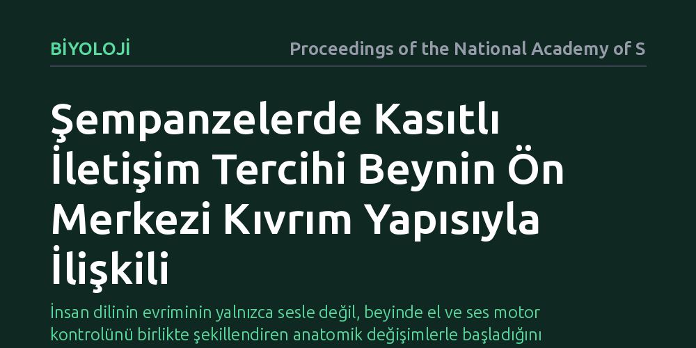

BIYOLOJI · Proceedings of the National Academy of Sciences · 2026-09-09
Araştırmacılar, şempanzelerin kasıtlı iletişimde el işaretleri veya ses kullanma tercihlerinin beyin anatomisiyle bağlantısını inceledi. Bulgular, iletişim biçiminin motor hareketleri yöneten ön merkezi kıvrımın biçimsel yapısıyla doğrudan ilişkili olduğunu gösterdi.
İnsan dilinin evriminin yalnızca sesle değil, beyinde el ve ses motor kontrolünü birlikte şekillendiren anatomik değişimlerle başladığını gösteriyor.

İnsanın en ayırt edici bilişsel becerisi olan dilin nasıl ortaya çıktığı sorusu evrimsel biyolojinin en büyük bilmecelerinden biridir. Bilim insanları uzun yıllardır insan dilinin ilk olarak el-kol hareketleriyle (jestlerle) mi yoksa sesli çağrılarla mı başladığını tartışmaktadır. Yaşayan en yakın evrimsel akrabalarımız olan şempanzelerin iletişim biçimleri, bu gizemi aydınlatmak için araştırmacılara eşsiz bir pencere sunmaktadır.
Tutsak şempanzeler üzerinde yapılan önceki çalışmalar, bu hayvanların insan bakıcılarından yiyecek isterken ya da dikkat çekmeye çalışırken kasıtlı olarak sesler çıkardığını, el işaretleri yaptığını veya her iki yöntemi birlikte kullandığını göstermiştir. Ancak bireyler arasındaki bu iletişim kanalı tercihlerinin beynin derinliklerinde yapısal ve biyolojik bir karşılığı olup olmadığı sorusu bugüne kadar yanıtlanmayı bekleyen temel bir soru olarak kalmıştır.
Araştırmacılar bu soruyu yanıtlamak amacıyla şempanzelerin iletişim esnasında sergiledikleri davranış repertuvarını ayrıntılı şekilde kayıt altına almıştır. Bireylerin iletişim kurarken yalnızca el hareketlerine mi (jestüel), dikkat çekici seslere mi (vokal) yoksa her iki kanalı birleştiren karma (bimodal) bir yapıya mı başvurdukları belirlenmiştir.
Elde edilen bu davranışsal sınıflandırma, daha sonra yüksek çözünürlüklü manyetik rezonans görüntüleme (MRG) taramalarıyla eşleştirilmiştir. İncelemenin odağında ise istemli hareketleri ve özellikle el becerilerini kontrol ettiği bilinen precentral girus (ön merkezi kıvrım) bölgesinin morfolojisi, kıvrım derinliği ve biçimsel asimetrisi yer almıştır.
Analizler, şempanzelerin iletişim kurarken tercih ettiği yöntem ile ön merkezi kıvrımın biçimsel yapısı arasında belirgin bir bağlantı olduğunu ortaya koymuştur. Özellikle el işaretlerini ağırlıklı olarak kullanan bireylerin motor kontrol merkezindeki anatomik yapısı ile sesli sinyalleri tercih eden veya iki yöntemi harmanlayan bireylerin beyin morfolojisi arasında ölçülebilir farklılıklar bulunmuştur.
Primat beynindeki bu yapısal değişkenlik rastgele bir dağılım göstermemektedir. İletişim kanalındaki bu bireysel uzmanlaşma, istemli motor kontrolü sağlayan beyin kıvrımlarının evrimsel süreçte iletişimin niteliğine göre şekillenebildiğini veya belirli anatomik özelliklerin belirli iletişim tarzlarını kolaylaştırdığını göstermektedir.
Elde edilen sonuçlar, insan dilinin yalnızca ilkel seslerden ya da yalnızca el işaretlerinden türediğini öne süren katı tekil kuramların yetersiz kalabileceğini düşündürmektedir. Bulgular, ses ve el hareketlerinin beyinde ortak ve birbiriyle bağlantılı motor devreler üzerinden birlikte evrildiği çok kanallı (multimodal) dil kökeni modelini desteklemektedir.
Yine de çalışmanın nedensellik değil korelasyon sunduğunu, yani beyin morfolojisindeki farklılıkların doğrudan bu iletişim tercihlerini doğurduğunu kesin olarak kanıtlamadığını belirtmek gerekir. Şempanzelerde gözlemlenen bu bağlantı, insana uzanan evrimsel süreçte beynin motor alanlarının kasıtlı iletişim araçlarına nasıl uyarlandığını anlamak için dengeli ve sağlam bir kanıt basamağı oluşturmaktadır.